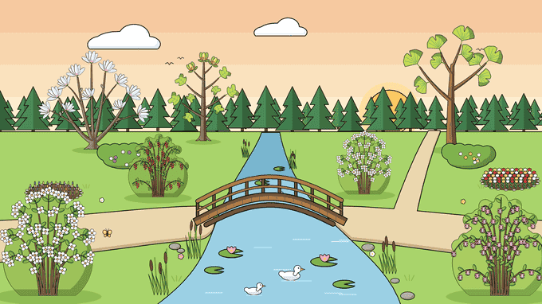
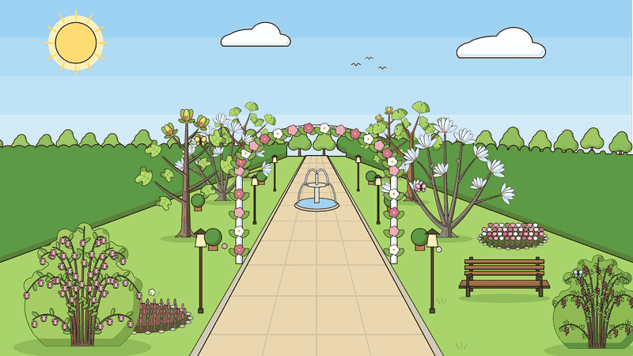

Ласкаво просимо до саду «Поділля»
Затишні стежки, квітучі галявини та дерева з різних куточків світу чекають на вас. Оберіть розділ, щоб дізнатися більше про рослини наших колекцій, або прогуляйтеся садом разом із ілюстраціями нижче.
Розпочати прогулянку →
Розділи саду
Квітник
Тюльпани, ромашки та пеларгонії – яскраві барви з весни до осені.
Чагарники
Кольквіція, чубушник і барбарис – живі огорожі та ароматні кущі.
Дендрарій
Гінкго, магнолія Кобуса та ліріодендрон – дерева-довгожителі.
Прогулянка садом



Порада: найкращий час для відвідування – кінець квітня,
коли зацвітає магнолія Кобуса, та червень, коли сад наповнює аромат чубушника.